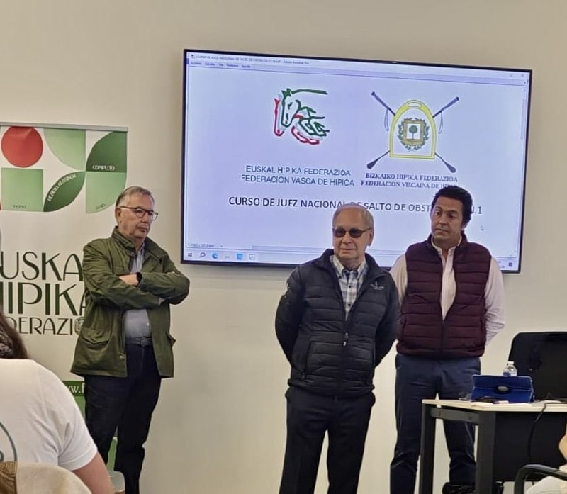

La Federación Vasca acoge un curso de formación de jueces de salto de obstáculos
La Federación Vasca de Hípica ha celebrado un Curso de Jueces de Salto de Obstáculos Nivel 1, organizado en colaboración con el Comité Técnico Nacional de Jueces de la RFHE.

La Federación Vasca de Hípica ha acogido la celebración de un Curso de Jueces de Salto de Obstáculos Nivel 1, una iniciativa impulsada junto al Comité Técnico Nacional de Jueces de la Real Federación Hípica Española. La actividad formativa se desarrolló en las instalaciones de la federación vizcaína y forma parte del programa de desarrollo técnico del colectivo arbitral en la disciplina de salto.
Este tipo de cursos de nivel inicial constituyen la base del sistema de formación de jueces en España, proporcionando los conocimientos fundamentales sobre el reglamento de salto de obstáculos, las funciones del arbitraje durante las competiciones y los criterios de evaluación de las pruebas. La formación continuada del cuerpo de jueces resulta esencial para garantizar la correcta aplicación de la normativa y el desarrollo ordenado de los concursos hípicos en todo el territorio nacional.
— Redacción de Hípica al Día